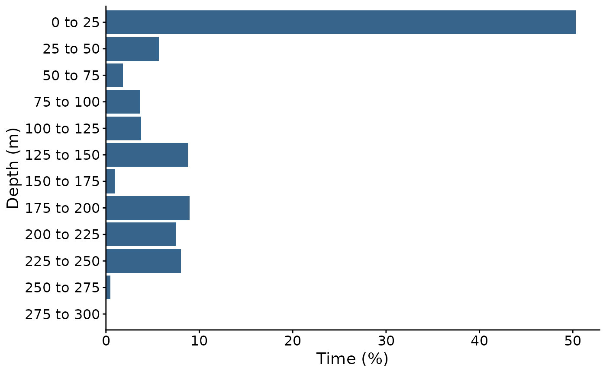
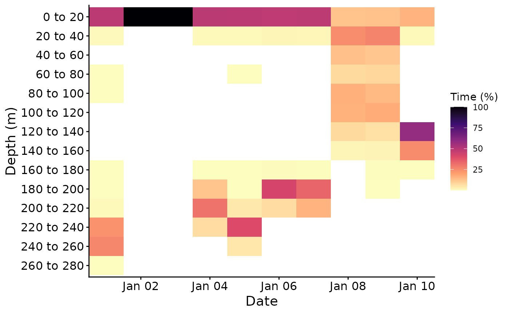

plot_time_at shows the percentage of time a tagged animal spent in each
depth or temperature range, for the whole record, each month, or each day.
Usage
plot_time_at(
archive,
variable = "depth",
breaks = NULL,
by = "all",
plot_size = c(8, 6),
dpi = 300,
output = FALSE,
output_folder = NULL,
verbose = FALSE
)Arguments
- archive
Data frame of time series depth data from
import_tag_data(). Time at temperature needs a 'temp' column, i.e. the tag imported withtemp_col.- variable
Character. "depth" for time at depth, or "temp" for time at temperature. Defaults to "depth".
- breaks
Numerical. Limits of the depth (m) or temperature (degrees C) ranges, e.g.
seq(0, 300, by = 25). Defaults to NULL, which chooses about 12 ranges of round values covering the record.- by
Character. "all" for one histogram of the whole record, "month" for one histogram per month, or "day" for a heat map of each day. Defaults to "all".
- plot_size
ggsave width and height for saving the plot. Must be numeric, positive and 2 elements long. Defaults to c(8, 6).
- dpi
Numerical. DPI to use for 'ggsave()' output. Defaults to 300.
- output
Logical. If TRUE, the plot is saved to
output_folder, named e.g. 'time_at_depth.png' or 'time_at_temp_by_month.png'. Defaults to FALSE.- output_folder
Output folder path used when
output = TRUE. Defaults to NULL.- verbose
Logical. If TRUE, progress messages are shown. Defaults to FALSE.
Value
A data frame with one row per group and range: 'group' ("All", the month, or the date), 'range' (e.g. "0 to 25"), its 'lower' and 'upper' limits, the number of 'records', the 'hours' they cover, and the 'percent' of the group's time. The ggplot object is attached as the attribute 'time_at_plot'.
Details
Time is counted as the number of records in each range, so the record should
have a constant sampling interval (see sampling_report()). Percentages are
of the records in each group (the whole record, a month or a day) that have a
value. Ranges include their lower limit, and the last range also includes its
upper limit.
Records outside the breaks are left out, with a warning.
Examples
# Set file path
filepath <- system.file("extdata", package = "FishDiveR")
# Load archive_days
archive_days <- readRDS(file.path(filepath, "data/archive_days.rds"))
# Time at depth over the whole record
tad <- plot_time_at(archive_days, variable = "depth", breaks = seq(0, 300, by = 25))
attr(tad, "time_at_plot")

head(tad)
#> group range lower upper records hours percent
#> 1 All 0 to 25 0 25 7252 120.866667 50.361111
#> 2 All 25 to 50 25 50 816 13.600000 5.666667
#> 3 All 50 to 75 50 75 265 4.416667 1.840278
#> 4 All 75 to 100 75 100 524 8.733333 3.638889
#> 5 All 100 to 125 100 125 545 9.083333 3.784722
#> 6 All 125 to 150 125 150 1268 21.133333 8.805556
# Time at depth each day
tad_daily <- plot_time_at(archive_days, by = "day")
attr(tad_daily, "time_at_plot")
